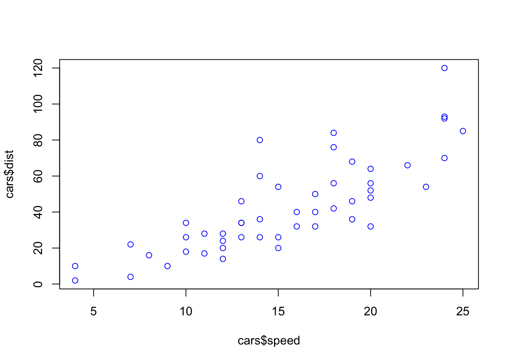

[1] 4Objects, assignment, and functions
Note: there is a video (maybe a little dated) that accompanies this walkthrough. It can be found at
Computations, Operations, Data Structures @ youtube
Assignment and Objects
In some of our earlier examples we ran a simple mathematical operation:
We can save any operation (mathematical or other) that we perform in R in an object. In R this accomplished using the <- operator. This can be accompanied by typing < and - or by a keyboard shortcut. Here’s a cheatsheet with a whole lot of info for RStudio. As you progress through the semester I recommend coming back to this cheatsheet. For now, look for the keyboard shortcuts for Insert <- and Run current line/selection.
Now let’s save the above operation to an object named x. Run each of the lines separately
Note that objects can contain more than numbers. For example they can contain names (or “strings”)“:
and logicals:
Vectors and Matrices
While objects can contain single values, more often they are more complex, containing multiple values:
[1] 2 4 6 8 10 12[1] 4 16 36 64 100 144[1] 200 400 600 800 1000 1200[1] FALSE TRUE FALSE FALSE FALSE FALSE[1] "numeric"We call the above a vector, it has a 1-dimensional data structure (think of it as a line of data). Note that we can also hold multi-dimensional data in matrices and data frames. For example, let’s transform our vector x into a 3 (rows) x 2 (columns) matrix y:
For those of you that are familiar with matrix algebra, you can have fun thinking about what operations you can perform from here. However, for now we’ll just move on. However, before doing so, let’s take note of what’s been going on in the History and Environment tabs.
Data Frames
You typically won’t create a data frame from scratch, but it’s probably the most important data structure you will use. Data that you import often takes this format. We’ll take more about data frames in the next workshop.
a bit on functions
This week you are going to encounter a number of built in functions including c(), install.packages(), and View(). Functions are commands in R that perform some programmed operation given the input parameters. For example, taking our vector x we can find the mean using:
where mean() is the function and x is the input parameter. Some functions take several parameters. For example:
speed dist
1 4 2
2 4 10
3 7 4
4 7 22
5 8 16
6 9 10
7 10 18
8 10 26
9 10 34
10 11 17
11 11 28
12 12 14
13 12 20
14 12 24
15 12 28
16 13 26
17 13 34
18 13 34
19 13 46
20 14 26
21 14 36
22 14 60
23 14 80
24 15 20
25 15 26
26 15 54
27 16 32
28 16 40
29 17 32
30 17 40
31 17 50
32 18 42
33 18 56
34 18 76
35 18 84
36 19 36
37 19 46
38 19 68
39 20 32
40 20 48
41 20 52
42 20 56
43 20 64
44 22 66
45 23 54
46 24 70
47 24 92
48 24 93
49 24 120
50 25 85
plot() is our function x parameter for values on x-axis y parameter for values on y-axis col color to plot the points
One of the most useful things about programming is that you can create your own functions. We’ll come back to more complex version of this later in the semester. But for now here is an example that takes whatever numerical value is in it and multiplies it by two:
And now to run it.
FWIW, this is a totally useless function… but simple enough.